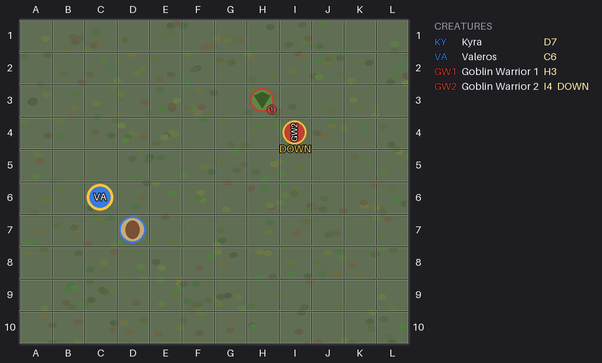

Your table has a goblin in it now.
Table Goblin is a Discord bot for running Pathfinder 2e. It does the bookkeeping, from initiative and conditions to the multiple attack penalty, treasure and coin, so the table can spend its time on the game.
What it does
- Build a character in Discord or on the site. Pick ancestry (including versatile heritages), class, feats and spells one dropdown at a time, plan every level on the wiki's Character builder (tick the books you own and it offers only their content, or see which books your build uses), and keep a live sheet. Already have a Pathbuilder sheet? Import it, or print a readable list of what you picked at each level.
- Play from chat. Type
pc::"grins and swings"{strike}and the bot rolls it as your character, under their own name and portrait. About 90 feat actions are also in your ability list. - Run encounters. Initiative, conditions, saves, reactions and the dying rules, with critical specializations, persistent damage, afflictions, auras and polymorph battle forms worked out for you.
- Use battle maps. Walls, terrain, magical light and darkness, daylight and fog of war, with cover, flanking, falls and forced movement worked out for you. Prepare maps on the wiki's Map prep page.
- Craft, earn and travel between fights. Craft items over downtime days with formulas, helpers, upgrades and reverse engineering; buy merchant upgrades; Earn Income, Subsist, Treat Disease and Repair; an optional cost of living; and a travel-time calculator that moves the campaign clock.
- Pull in creatures and NPCs. Take any bestiary creature or build your own, with stat blocks kept GM-only, plus animal companions, familiars, eidolons, constructs, vehicles and siege weapons.
- Handle loot, shops and towns. Treasure payouts with unidentified magic items, a shared party fund, packs you can set down and pick up again, and generated towns with their shopkeepers.
- Let the GM set the table's rules. Variant rules (free archetype, ancestry paragon, automatic bonus progression, gradual boosts, legacy voluntary flaws), rarity, the books players may build from, a party level cap, sell rates and the cost of living, shared with players as a campaign code.
Premium coming. When subscriptions start, a campaign subscription will be needed to attach and edit battle maps, to build, level up and buy starting gear with the character builder, to build NPCs with /tgnpc build, to make and edit homebrew items (/tgm homebrew), and to bring in files from this site's builders (character recipes, NPC builder files, encounter files, Item builder files and Map prep terrain files). Anyone in the campaign, player or GM, will be able to subscribe it. Still free: Pathbuilder import and resync, removing and exporting homebrew items, Table Goblin export files, NPCs from the bestiary, by hand or from a CSV, /tgretrain, and playing on a map that is already set. Everything is free while we test, and nothing you made is ever deleted or hidden.
Recently added
v0.2950 Nov 28, 2026 · 4:40 AM ET · 14 changes since v0.2936
- 📏 The campaign rules panel is in sections.
Rules are grouped: Content (with a one-click 🎖️ Society-legal books button), Characters, Initiative, Table rules, Loot, and Towns and shops. Each opens its own page, a changed section turns green, and one Save writes everything. Nothing you set before changes. The command moved:
/tgm campaign_rulesis now/tgm campaign_rules edit.Table GoblinAPP📚 Content🧙 Characters⚔️ Initiative🎲 Table rules💎 Loot🏘️ Towns and shopsSaveCancelMockup, invented campaign.
- 📤 Copy your rules to another campaign.
/tgm campaign_rules exportsaves your whole rule set as a file, and/tgm campaign_rules importapplies it to another campaign. Import shows exactly what would change first, names anything the campaign can't take (Society locks, a game that isn't installed), and changes nothing until you press Apply. Also on the GM dashboard: 📏 Rules → Export or Import rules file. Free. - 🔕 No more surprise pings.
A character's post or roll can only ping the members it names, and roles only when the poster is allowed to. It can never ping @everyone or @here.
- 📏 Aura Sustains say how far they reach.
Sustaining Bless, Bane and other auras now posts the new radius (and the old one) and who is inside, marking who is affected or resisted for hostile auras.
- 🎖️ Society games earn no fight XP.
In Society campaigns, fights no longer track XP, suggest level-ups or show an XP bar. Society XP by adventure is coming next.
- 🧹 The old class commands are gone.
The 29 retired per-class commands no longer show in Discord; everything they did is in the Combat menu and
{action:…}. The Gear tab's Stow lists now page through every item, and the site uses invented names in its examples.
v0.2936.2 Nov 25, 2026 · 5:52 PM ET · patch: 2 fixes on v0.2936
- 🗡️ Spellstrike works with cantrips that come in versions.
Ignition, Gouging Claw and Needle Darts couldn't be picked for Spellstrike, so a magus with only those cantrips never saw the Use button light up. They're in the list now, and Spellstrike uses the spell's melee version when it has one (Ignition deals its melee 2d6 fire).
- 💀 Healing a dead creature does nothing.
/tge healcould give a dead creature Hit Points while it stayed dead. Now it says the creature is dead and how to bring it back (clear the dead condition first). Taking back a hit that killed outright also clears the dead mark.
v0.2936.1 Nov 23, 2026 · 9:00 AM ET · patch: 1 fix on v0.2936
- 🗂️ The GM dashboard works with forum channels.
If your campaign's in-character channel is a forum, dashboard buttons like Start a fight used to stop with an error. Now the bot asks which post to use: pick an existing post, or open a new post named for the fight. Click from inside a post and it uses that post without asking.
Table GoblinAPPUse an existing post… ▾➕ New post: Goblin ambushCancelMockup. Only the GM who clicked sees it.
v0.2936 Nov 23, 2026 · 8:19 AM ET · 56 changes since v0.2880
- 🏁 Levels 1 to 5 are complete in both systems.
Starfinder level 5 is finished, joining Pathfinder: every option, creature ability and item from level 1 through 5 now works, apart from three Starfinder creature abilities that need radiation sickness, which the source material doesn't define. Level 6 is at 98% in Pathfinder and 97% in Starfinder, and level 7 is underway.
- ✨ More spells at work.
Scrying, Spellwrack (with its surge damage each turn), Flaming Fusillade, Siege Weapon's Blessing, Orb of Twisting Fate, Collective Transposition, and Allegro and the other haste spells now run.
- 🗡️ Level 6 feats.
The Spectral Dagger and Soul Bleed, psi cantrip grants (Psi Development, Parallel Breakthrough), Spell Relay, Fortified Elixirs, Return Fire, Claim the Field, Talon's Mark, Soul Arsenal and Fearsome Familiar work.
- 🎒 Items.
Gluon Crystal's bleed is now persistent damage, as written. Hardlight Buckler, Spike Shot, Gearbinder Oil, Gimmick (Devastating), Disruption Ammunition and Bottled Air work, along with Ancestral Pest's tiny animal form once a day.
- 🐉 Monsters.
Troop Spellcasting, Sandsense, Rock Tunneler, Embed Thorn, Burn Alive (fire on a creature it's holding) and Bellowing Command (which Quickens its allies) work, and level 7 creatures cross snow, forest and ice as written.
v0.2880 Nov 22, 2026 · 10:24 PM ET · 46 changes since v0.2834
- 🏁 Pathfinder level 5 is complete.
Every Pathfinder feat, class feature, spell, action, creature ability and item at level 5 now works, so levels 1 to 5 are done. Starfinder level 5 is one feat away. Level 6 is at 96% in both systems.
- 💳 Paywall is a box.
Starfinder's Paywall now walls in a 10-foot square on the map: four sides, each with its own Hit Points, so breaking one side opens only that side. Pay 10 credits to pass through, or take on the debt if you carry a credstick.
- 💡 Flash of Insight before the roll.
A creature's Flash of Insight is now used before it rolls, as written, and makes its next save, Strike or check a success. Creature abilities that share a name no longer replace each other.
- 🛡️ Level 6 feats and gear.
Anticipate Ambush, Crowd Mastery, Shrink Spell, Nimble Shield Hand, Construct Shell and Misty Transformation work, along with Druid's Crown, Lion's Pelt, Charm of Resistance, Warding Paste and Herd Mask. Magnetic Shield, Crushing Coils and Large Bore Modifications finish level 5's items.
- 🐲 More level 6 monsters.
Ruinous Weapons, the Graveknight's Shield, Shield Arm, Detach Cluster, Blood in the Water, Smoke Form and Spellsong Casting work.
- 🩹 Fixes.
Fins give each grade's own swim Speed instead of 20 feet for all, Ultralight Wings give their fly Speed when deployed, and the Horselord's Longbow checks that you're riding.
v0.2834 Nov 22, 2026 · 6:55 PM ET · 86 changes since v0.2756
- 🏁 Pathfinder levels 1 to 4 are complete.
Every Pathfinder feat, class feature, spell, action, creature ability and item from level 1 through 4 now works: 8,914 in all. Starfinder levels 1 to 4 are done too, except three creature abilities that need radiation sickness, which the source material doesn't define. Level 5 is nearly finished and level 6 is well underway.
- 🐈 Familiars do more.
Familiar abilities that act for you now run from the Combat menu: Restorative Familiar heals you, Familiar Focus restores a Focus Point, and Familiar Mascot shares your abilities with your familiar. Improved Familiar lowers the number of abilities a specific familiar needs, in the builder and at level-up.
Table GoblinAPPHeal meCancelMockup, sample character.
- 🪢 Nets, venom and rerolls for allies.
Throw Net and Tenacious Net tangle a target, Debilitating Venom moves a poison along its stages, and Astral Insight lets an ally reroll. Starfinder's Alternate Outcome can now be offered to the witchwarper, not just the roller, and Called to Help gives a reaction just for Aid.
- ✨ New spells at work.
Raise Dead returns a creature at 1 Hit Point with its week of conditions, Cryostasis stops a dying creature from getting worse, and Fly, Transparency, Spell Sanction and Tentacular Innervation work. In Starfinder, Paywall puts a wall on the map, Subjective Reality and Liminal Hyperlink work, and Armor raises a force field.
- 🌳 Hundreds more monster abilities.
Level 5 and 6 creatures got most of their abilities: terrain auras like Turbulent Skies, crowds that are hard to move through, flat damage bonuses like Mauler, and about 190 new GM actions. The Blood-Awakened Tree's Drink Blood follows up a root hit on a bleeding target with 2d6 piercing and heals the tree.
- 🧪 Level 5 items.
Potions and salves that counteract diseases and paralysis, whetstones like the Toothy Knife and Slayer's Stone, spell catalysts, and gear that spends a carried consumable (Living Leaf Weave, Ooze Skin) all work. Bola Shot and other effects that happen when you hit now fire on the hit.
v0.2756 Nov 22, 2026 · 12:35 PM ET · 56 changes since v0.2681
- 🐸 Five new companions, and their support benefits work.
Goblin Dog, Knurled Worm, Regal Toad, Thorngrip Shuffler and Yzobu (Infernal Inheritance) join the companion list. The Combat menu has two new companion actions, Companion Support and Companion Advanced Maneuver; in a fight, Command an Animal first. The new support benefits now run on their own: the Goblin Dog's drool sickens a creature you hit (a new Wipe Away action cleans it off), the Knurled Worm's slime trips up the next move, the Thorngrip Shuffler's hooks hurt a creature that pulls away, and a puffed-up Regal Toad gives better cover. Their five new maneuvers work too, like Slobbering Bite and Bellowing Croak.
Table GoblinAPPStrikeCompanion SupportCompanion Advanced ManeuverMockup, sample character.
- 🐺 Every companion fights better.
Companions with two attacks now get both, so 49 species no longer lose their second Strike. Reach of 10 or 15 feet is read correctly, burrow, climb, fly and swim Speeds work on the map, and advanced maneuvers show their real names. Existing companions pick this up the next time they're rebuilt or change tier. Beastmaster's Call now places a projection of your companion on the map that grants its support benefit until your next turn.
- 🎟️ Companion choices follow your campaign's rarity rules.
New companions are offered like other options: uncommon and rare types only when the campaign allows them, or when you meet their access line (a bugbear can pick the Thorngrip Shuffler). Companions your players already have keep working.
- 🧙 Hag covens.
Three or more coven creatures can form a coven: each gets stronger, they sense each other, and the bot checks the rules for casting a coven spell together.
- 🧭 Level 2 is finished, and levels 3 and 4 are nearly there.
Creatures can counteract each other's effects, zones left behind by an action (like Belly Grease) affect anyone who moves through, and auras the bot can't run alone get a GM button. Lost in the Dark dims the map's light, Field of Undeath heals the undead inside it, and Perceive the Threads of Fate works behind the Mythic rule.
- 🎲 More items and critical hits.
Damage dice that only apply on a critical hit, like Blazing Banner's, now roll when you crit. Lucky Copper and Ancestral Geometry reroll as written, Camouflage adds to your actual Stealth roll, and shields' temporary Hit Points soak damage when you Shield Block.
v0.2681 Nov 22, 2026 · 6:16 AM ET · 109 changes since v0.2570
- 🏁 Level 1 is finished.
Every level 1 option, creature ability and item now works in both Pathfinder and Starfinder. Monsters use their own reactions and tricks: Human Shield pulls an ally into the way, Sacrifice Minion trades a minion's life for the boss's, and Not Where You Think slips a creature out of a hit. Abilities that fire on a hit, at the start of a turn or on death run on their own, and Sodden Ground and Grave Tide leave difficult terrain on the map. In Starfinder, a Vitality Network shares one Hit Point pool, and a Force Field soaks damage before your own Hit Points and refills each turn. Levels 2 and 3 are most of the way there too.
- 🏛️ Mythic creatures stay out of non-mythic games.
With the Mythic campaign rule off, mythic creatures can't be added to a fight, and the bot says why. With the rule on, their mythic resistance applies to damage as written.
- 💣 Grenade launchers.
When you throw a grenade while carrying a launcher, the bot asks how it goes out. A Grenade Launcher takes 2 actions and uses the launcher's range, an undermounted launcher reaches 20 feet, and a Reusable Grenade Shell keeps the grenade but needs 24 hours to repair. On the map, creatures out of range are left out of the blast.
Table GoblinAPPThrow itGrenade launcherUndermounted launcherReusable Grenade ShellMockup, sample character. Only the ways you actually carry are offered.
- 🪨 Strikes that break through Hardness.
Shattering Blows, Destructive Smash, Breaching Strikes and Demolition Expertise now lower the object's Hardness when the damage is applied. The Strike line shows how much it ignores.
- 🔭 Braced for tripods and bipods.
If you carry a Tripod or Bipod, your sheet's situational toggles now include Braced. Turn it on after you set it up, and your Strikes get the benefit until you turn it off.
- 🐝 More items that work on their own.
The Beekeeper's Smoker has two actions now: Light keeps it lit for 10 minutes, and Spray Smoke can be used once a minute while it's lit. Spellhearts cast their spell, and augmentations like Claws and Bone Blade give you their Strike. Boots of Quick Marching, Jump Jets, Motion-Seeking Lenses and dozens more work too.
v0.2570.1 Nov 22, 2026 · 12:01 AM ET · patch: 2 fixes on v0.2570
- 🏷️ Tell creatures apart on the map.
Creatures that would show the same letters on their tokens now get numbers, like GW1 and GW2, and a name that already ends in a number keeps it. Tokens with a picture get a small number badge. Beside the terrain legend, a new Creatures panel lists each token's label, name and current square, plus DOWN, DEAD, burrowed or height when they apply. Players' maps list only the creatures they can see; the GM's map lists everyone.

- 🩹 Focus spells from the cast menu work again.
Casting a focus spell that has a saving throw from the chat cast menu could stop with an error. It now rolls the saves normally.